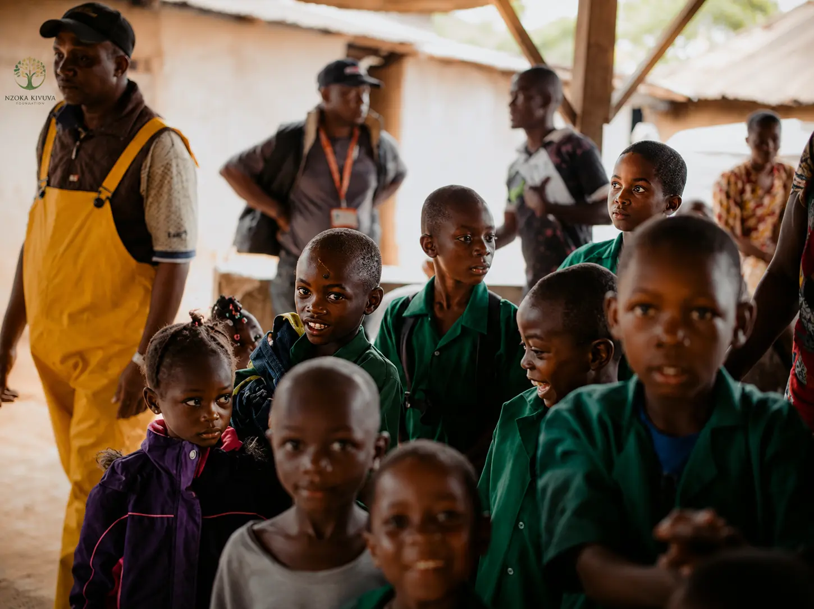

In Machakos County, a bright future is often cut short not by a lack of ambition, but by a lack of resources. Every year, hundreds of students from vulnerable families are forced to drop out of school — not because they failed their exams, but because their families simply cannot afford the fees.
For many parents in arid and semi-arid lands (ASAL), a poor harvest, a drought, or an unexpected medical emergency can mean the difference between keeping a child in school and sending them to look for casual labour.
"I had already packed my books when I thought my education was over. My mother couldn't afford my Form 3 fees. Then the Nzoka Kivuva Foundation stepped in."

The Silent Crisis: Why Students Drop Out in Rural Kenya
Education is the most powerful tool for breaking the cycle of poverty. Yet, for thousands of young people in Machakos County, the dream of completing their education remains just that — a dream.
Youth unemployment in Kenya stands at over 15%, with young people in rural areas disproportionately affected. In arid and semi-arid lands (ASAL) like Machakos, high school and college dropout rates spike significantly due to financial challenges, climate shocks, and limited access to opportunities.
How the Nzoka Kivuva Foundation is Making a Difference
Through our Sports-Linked Scholarship Program, we've been able to keep vulnerable students in school by providing:
- Full tuition support for students in need
- Learning materials – books, stationery, and uniforms
- Sports equipment to nurture talent alongside academics
- Mentorship to guide students through their academic journey
"To date, our foundation has disbursed over KSh 1.2 million in student bursaries, directly keeping 48+ vulnerable students in school across 12 partner schools in Machakos County."
Real Stories, Real Impact
Case Study: Sarah's Journey
Sarah Ndunge, a Form 3 student from Mwala, had already accepted that her education was over. Her mother, a single parent, had lost her small business during the drought season. With no income, school fees became an impossible burden.
"Through the foundation, I received mentorship and a sports-linked scholarship that got me through high school. I'm now coaching young kids in my village."
Today, Sarah is not only back in school but is also an active member of her school's football team. She dreams of becoming a teacher and giving back to her community.
The Link Between Education and Sports
At the Nzoka Kivuva Foundation, we believe that sports and education go hand in hand. Our scholarships are designed to reward students who excel both in the classroom and on the field. This dual approach ensures that young people develop discipline, teamwork, and leadership skills — qualities that will serve them for a lifetime.
Every KSh 2,500 funds a sports-linked scholarship. Every KSh 5,000 provides learning materials for 5 students. Every KSh 25,000 fully sponsors one student's education.
Our Commitment to Transparency
The Nzoka Kivuva Foundation is a fully registered public benefit organization (Registration No. CLG-BWTORQPV). We are committed to absolute transparency and accountability in every program we deliver.
"We mobilize and manage resources with absolute transparency and accountability, ensuring every partnership drives measurable community impact."

How You Can Help
Every student deserves a chance to pursue their dreams. Your support can help us reach more students like Sarah and break the cycle of poverty through education.
Ways to Get Involved:
- KSh 2,500 – Funds a sports-linked scholarship
- KSh 5,000 – Provides learning materials for 5 students
- KSh 10,000 – Supports a full tournament
- KSh 25,000 – Fully sponsors one student's education
Help Keep Vulnerable Students in School
KSh 2,500 funds a sports-linked scholarship for a deserving student in Machakos County. Join us in breaking the dropout cycle and transforming futures.